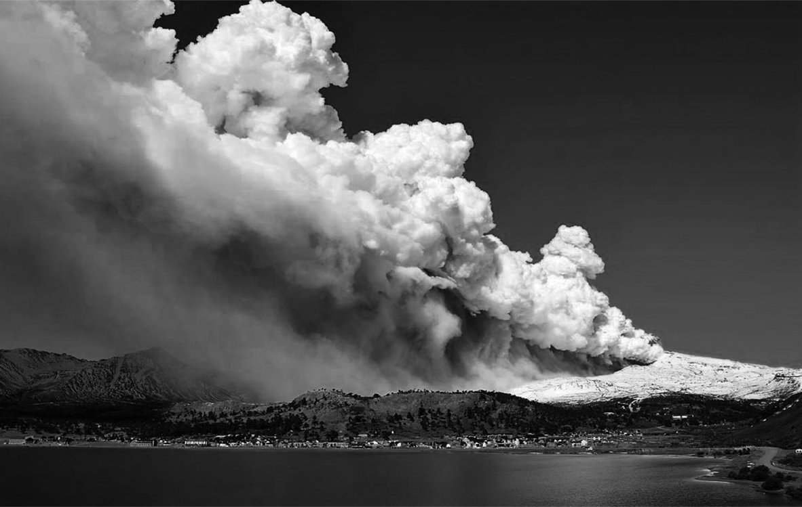

IG-GIRD (Información Geoespacial para la Gestión Integral del Riesgo de Desastre) desarrollada por el Instituto Geográfico Nacional (IGN) en el marco de la Dirección de Planificación, Investigación y Desarrollo, es una plataforma interactiva para la difusión de conocimiento e información espacial de los riesgos de desastres en la Argentina.
Con el fin de brindar una herramienta para la labor de investigación, la educación y toma de decisiones, se pone a disposición información clave para la caracterización del riesgo al que están expuestas comunidades, integrando información generada a través de un trabajo interinstitucional con la Red de Organismos Científico-Técnicos para la Gestión Integral del Riesgo (RED GIRCYT) y en contribución al SINAGIR (Ley 27.287 - Sistema Nacional para la Gestión Integral del Riesgo y la Protección Civil) y a su sistema de monitoreo y emergencias (SINAME).
El IGN, como organismo responsable de administrar, producir, actualizar y publicar información geoespacial, por medio de esta plataforma, brinda información geoespacial básica y fundamental siguiendo normas y estándares establecidos nacional e internacionalmente, de manera de facilitar el acceso a los/as usuarios/as, garantizando la interoperabilidad de los datos.

Se adopta la terminología específica sobre Gestión Integral del Riesgo de Desastres (Ley 27.287 de creación del SINAGIR) como marco general a los fines de unificar criterios a escala nacional. Como referencias bibliográficas se han utilizado el glosario de la citada ley, el Manual para la elaboración de Mapas de Riesgo elaborado por el Ministerio de Seguridad en 2017 y el marco teórico desarrollado por el Programa de Investigaciones en Recursos Naturales y Ambiente de la Facultad de Filosofía y Letras (UBA). Entendemos por gestión de riesgo de desastre a los procesos sistemáticos y capacidades operativas para la formulación, adopción, implementación y ejecución de políticas, medidas, estrategias, planificación, organización de prácticas y acciones que permitan responder, reducir, prevenir y controlar de manera permanente el riesgo de desastre y sus efectos en una sociedad determinada.
El riesgo corresponde al potencial de pérdidas o daños que puede ocurrir en un momento dado en una sociedad determinada. El riesgo se caracteriza por ser “dinámico y cambiante” ya que es el resultado del mutuo condicionamiento de los factores de amenaza y vulnerabilidad que son específicos de cada situación. Por lo tanto, dependiendo de la capacidad institucional e individual de hacer frente y/o actuar se puede reducir el riesgo o agravarse, al aumentar la exposición y vulnerabilidad.
En este sentido, se puede hablar de un proceso social de configuración del riesgo, dado que surge de la interacción de la sociedad con su entorno condicionado por procesos económicos, sociales, políticos y culturales.
Teniendo en cuenta la definición anterior, y siguiendo el marco teórico adoptado por el SINAGIR, el riesgo está compuesto por los conceptos de: amenaza, vulnerabilidad y exposición, los cuales se detallan a continuación.
Amenaza
Es entendida como el factor externo que es representado por la posibilidad de que ocurra un evento/ fenómeno adverso en un momento y lugar determinado, con cierta magnitud que podría ocasionar daños a la sociedad que allí habita, como también a la infraestructura, servicios, formas de vida, pérdidas económicas y ambientales.
Se debe tener en cuenta a su vez la vinculación entre las amenazas de origen natural y antrópica y los procesos de degradación ambiental, ya que si bien las características de dichos fenómenos son diferentes, tienen mutuas influencias entre sí, lo cual puede ampliar la peligrosidad. En este sentido, la plataforma permite, a partir de la superposición de varias capas de información, realizar un análisis multi amenaza.
Exposición
Se entiende la exposición como la distribución espacial de la infraestructura y población susceptible de verse afectada por la ocurrencia de un desastre. La exposición indicará a los tomadores de decisión cuáles son los bienes, infraestructura y población que está en peligro ante un evento amenazante. Capas como el ejido urbano o las vías de comunicación que se brindan en esta plataforma, son algunos ejemplos de información geoespacial que permiten el estudio de la exposición.
Vulnerabilidad
La vulnerabilidad se refiere a las condiciones de la población que puede estar afectada por un fenómeno particular, a la estructura social, económica y política de la sociedad y a las características de esa estructura previas a la ocurrencia de un desastre, que determinarán lo catastrófico del fenómeno. De esta forma pueden analizarse las diferencias existentes entre los distintos grupos de una sociedad afectada por un mismo fenómeno. La vulnerabilidad es un concepto muy relativo y debe ser analizado según las condiciones de cada comunidad. Respecto a este concepto, la capa de índice de vulnerabilidad social (IVS) proporciona una aproximación a las características de vulnerabilidad social a nivel departamental. Este nivel de análisis sirve para la identificación del problema y de las zonas donde focalizar y conducir estudios con mayor grado de detalle.
Cabe aclarar que estas componentes se ven atravesadas por niveles de desconocimiento, lo que nos remite a la componente de incertidumbre, relacionada con las limitaciones en el estado del conocimiento y las indeterminaciones en cuanto a competencias institucionales y aspectos normativos.